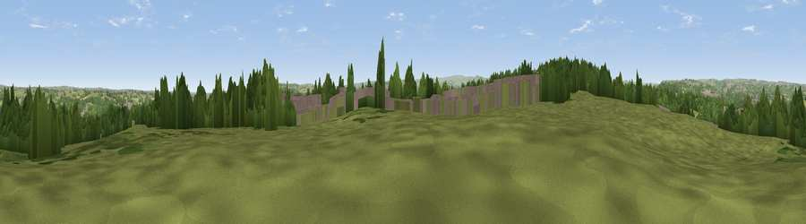

Viewpoint near Rastrick
#22244 in England · top 38% of its area beats it · near RastrickThe view, rendered

A 360° render of this exact spot computed from the terrain model, tree cover and land cover — summer colours, afternoon light, calibrated against photographs of famous viewpoints. Real trees, hedges and buildings will differ in detail.
The panorama
Grey silhouette: terrain skyline in each direction (720 bearings, Earth curvature and refraction included). Dashed green: skyline with trees (+15 m) and buildings (+8 m) as obstacles. Blue strip: how far the ground is visible on each bearing.
Where the view opens
Wedge length = distance to the farthest visible ground on that bearing (vegetation-aware). Rings at 10, 25 and 50 km.
What fills the view
45% grassland · 32% woodland · 18% built-up · 5% cropland
Angular shares of the visible panorama (visual magnitude), not map area. Landscape diversity 0.51 (0–1 Shannon).
Key numbers
More beautiful places nearby
The staircase of upgrades: each row has a higher view potential than everything closer. Driving times are estimates from straight-line distance, calibrated against real road routing — check an actual route before setting out.
| Place | Direction | Drive | Score |
|---|---|---|---|
| Fixby Ridge | WSW · 3 km | ~7 min | 65.7 |
| Viewpoint near Kirkheaton | ESE · 3 km | ~8 min | 68.0 |
| Castle Hill | S · 7 km | ~14 min | 70.2 |
| Viewpoint near Stump Cross | NW · 10 km | ~19 min | 71.5 |
| Viewpoint near Jackson Bridge | S · 14 km | ~25 min | 73.5 |
| Viewpoint near Greenfield | SW · 23 km | ~38 min | 76.0 |
| Viewpoint near Otley | NNE · 24 km | ~39 min | 77.5 |
| Darwen Hill | W · 47 km | ~68 min | 80.7 |
53.68142, -1.77022 · source: screening · position refined by local search. Computed location — check access rights before visiting.